无限画布
按步骤了解如何新建画布、在同一块空间里生图或生视频，以及如何用节点、分组和整理把多轮尝试放在一起。
1. 进入页面与布局
登录后，在左侧导航中点击「无限画布」，即可进入画布列表。首页的「进入无限画布」，以及 AI 生图结果区的「画布模式」，也会跳到这里。
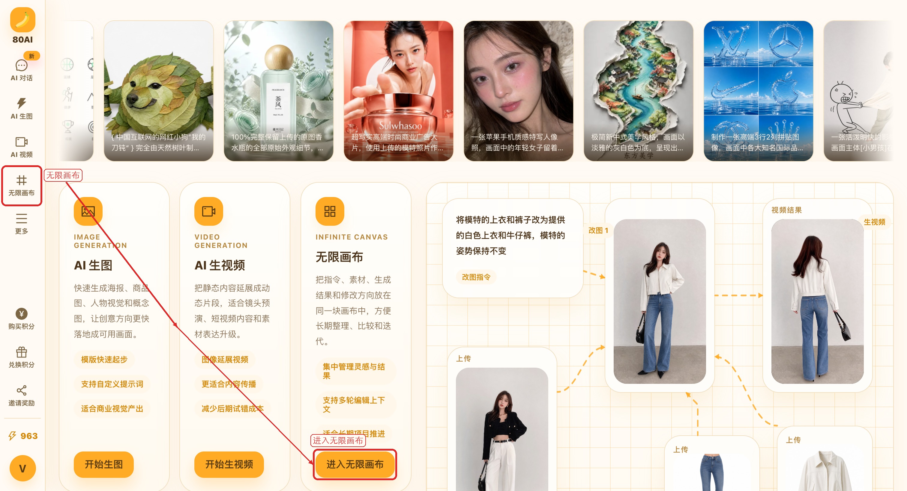
无限画布分成两层页面：
- 画布列表：查看、新建、重命名或删除画布，也可以复制示例画布。
- 画布工作台：在无限空间里摆放节点、提交生图或生视频任务，并继续编辑结果。
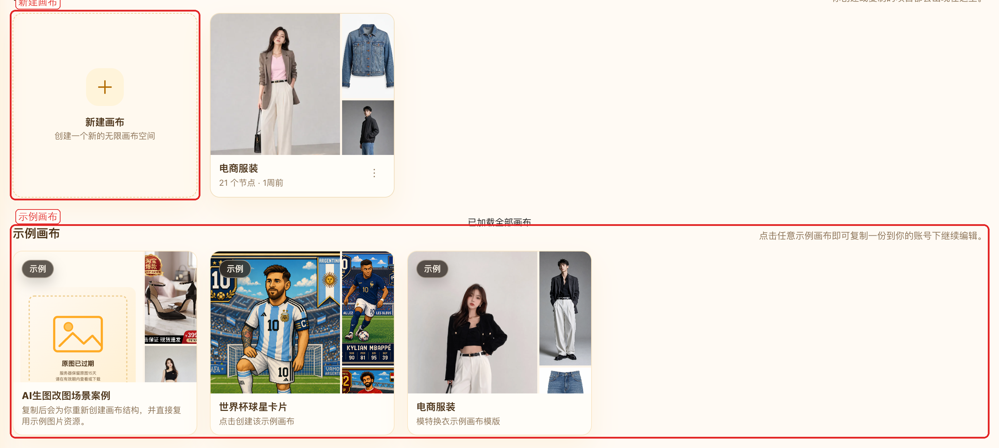
进入工作台后，页面大致分成这几块：
- 左上角：当前画布名称，可切换、重命名或新建画布。
- 左侧工具栏：切换选择 / 抓手、添加自由节点、打开素材、搜索节点、一键整理。
- 底部创作区：输入提示词，切换生图 / 生视频，上传参考图并提交任务。
- 右下角：查看缩放比例，快速缩放、复位视图或刷新画布。
- 右上角：提交反馈，或返回画布列表。
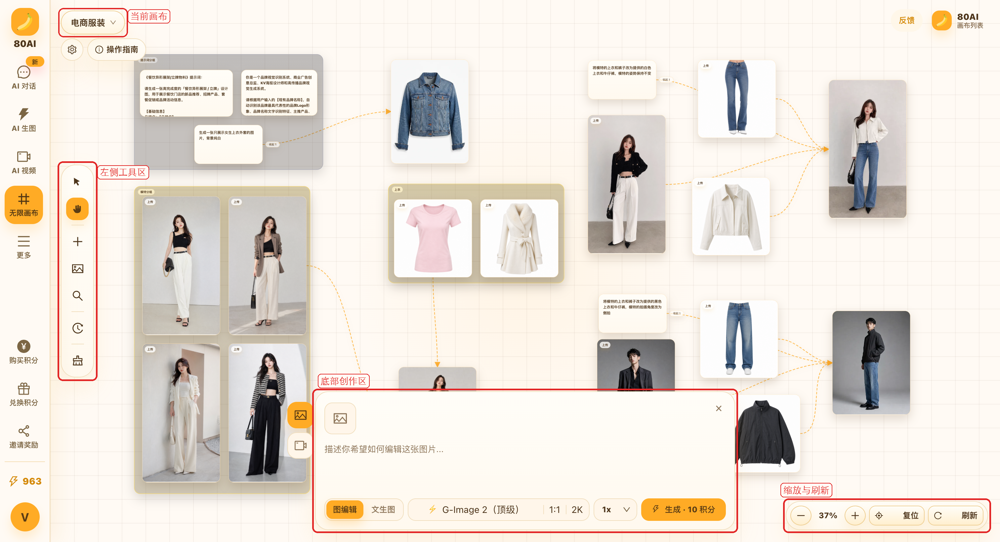
2. 新建与管理画布
每个画布都是一个独立项目，适合按主题或客户分开整理。建议一个方向用一块画布，避免节点混在一起。
- 在画布列表点击「新建画布」，系统会创建并直接进入工作台。
- 还没有自己的画布时，也可以先点「示例画布」。系统会复制一份到你的账号，方便对照学习。
- 卡片右上角「更多」可以重命名或删除画布。删除后，该画布和其中的任务会从列表移除。
- 顶部搜索框可以按画布名称查找。
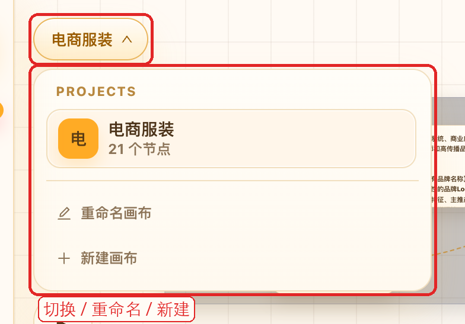
已经在工作台里时，也可以点左上角画布名称：
- 切换到其他画布。
- 重命名当前画布。
- 直接新建一块画布。
4. 在画布里生图
画布里的生图和 AI 生图页使用同一套积分、并发和任务处理。提交后，任务会出现在当前视野中心，方便继续对比和改图。默认模式是「图编辑」。
- 点击底部输入框展开创作区。左侧图标切到图片。
- 选择「文生图」或「图编辑」。
- 写提示词。图编辑还需要先放参考图：本地上传、从「我的素材」选用，或从画布已有图片中点选。
- 点底部参数条，选择模型、宽高比和质量。右侧数量可设 1 到 8 张。
- 点击「生成」。按钮上会显示本次预计消耗的积分。
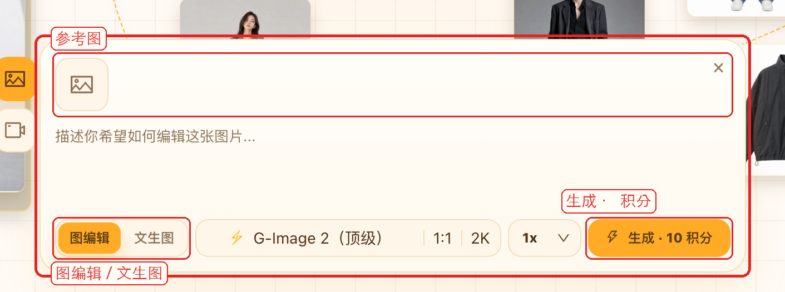
提交后可以马上改提示词或参考图，再发下一个任务。画布空白处没有草稿时，点击空白会自动收起创作区；已经写了提示词或放了参考图时，会保持展开。
5. 在画布里生视频
同一块画布也能继续做视频，不必跳到单独的视频页。适合把满意的静帧立刻延展成动态片段。
- 在底部创作区左侧切到视频图标。
- 选择「文生视频」或「图生视频」。
- 图生视频需要先放参考图；文生视频只写镜头、动作和氛围即可。
- 选择模型、宽高比、时长和分辨率。一次可发 1 到 4 条。
- 点击「生成视频」。按钮同样会显示预计积分。
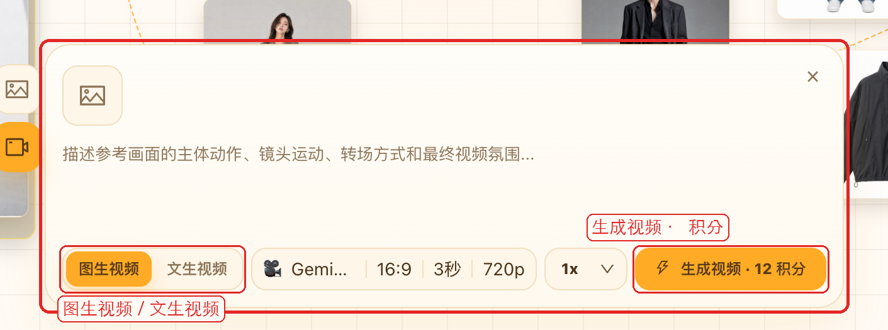
也可以先选中一张图片节点，再点「生成视频」。系统会切到图生视频，并带入当前图片。
6. 添加自由节点
除了生成任务，还可以把想法、参考图和素材直接铺在画布上，作为后续创作的起点。
- 文本节点：记下指令、分镜或待改事项。双击即可编辑，也可以用它一键回填提示词。
- 上传图片：从本地拖入或上传，按真实宽高比展示，之后可作为参考图继续编辑。
- 我的素材：把已保存的参考图或满意结果直接放到画布上。
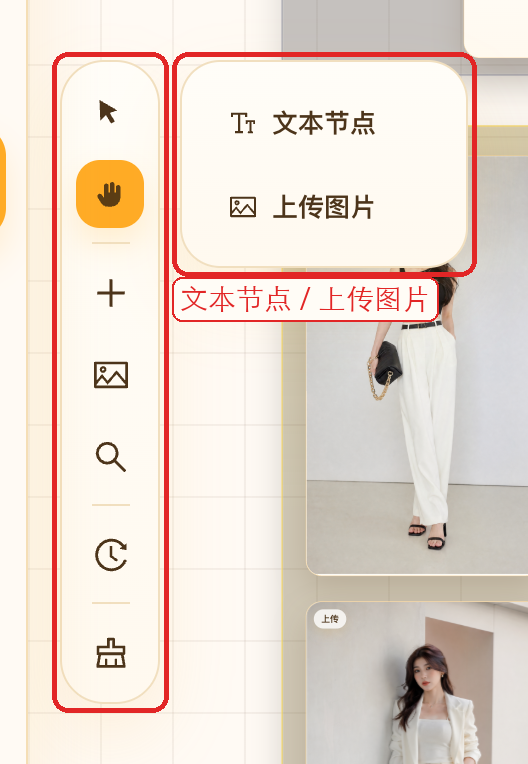
添加方式有三种：
- 点左侧「+」，再选「文本节点」或「上传图片」。
- 在空白处右键，选「添加文本」「上传图片」或「我的素材」。
- 把本地图片直接拖到画布上。
7. 处理节点结果
任务提交后会变成画布上的节点，显示生成中、成功或失败状态。图片可以拖动位置，右下角手柄可以拉伸大小。
单击节点后，上方会出现操作条：
- 重新生成：把当前提示词、模型和参考图回填到底部，再跑一次。
- 编辑图片：把这张图带到图编辑，继续改。
- 生成视频：把这张图带到图生视频。
- 下载：保存原图或视频到本地。
- 详细信息：查看完整参数。
- 反馈：结果有问题时直接提交。
- 删除：从画布移除该节点和相关连线。
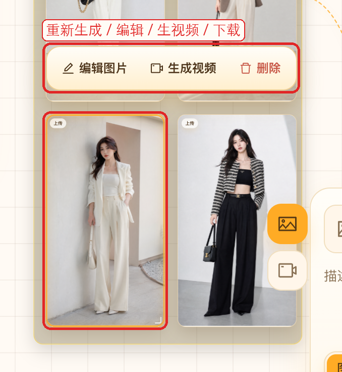
其他常用操作：
- 双击图片预览大图；双击文本节点进入编辑。
- 右键节点可快速编辑、生成视频、添加到我的素材或删除。
- 在选择模式下框选多个节点后，可以添加分组、自动排列、生成或批量删除。
8. 选择参考图
图编辑和图生视频必须先有参考图。画布里已经生成或上传过的图，都可以直接拿来用，不用重新找文件。
- 切到「图编辑」或「图生视频」。
- 点参考图区域的加号，选择「本地上传」「我的素材」或「从画布选择」。
- 从画布选择时，点击画布上的图片即可加入。顶部会显示已选数量和当前模型上限。
- 选完后点「完成选择」，写好修改或镜头说明，再提交。
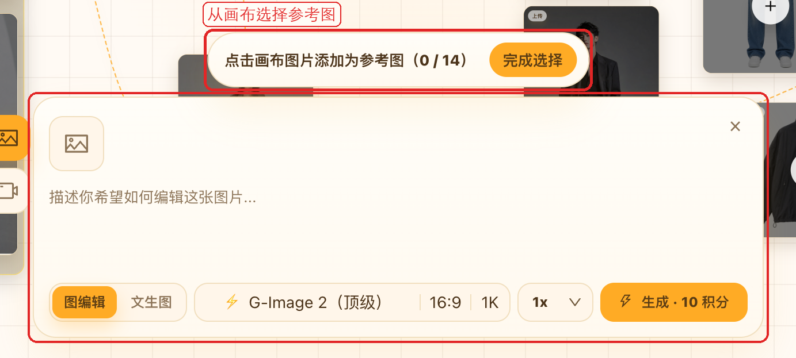
参考图数量上限由当前模型决定。已经在列表里的图不会重复添加；达到上限后需要先移除一张，才能继续选。
9. 分组与关联线
多轮尝试之后，可以用分组把同一主题收在一起，用关联线看清「参考图 → 结果 → 再编辑」的关系。
- 添加分组：先切到选择模式，框选节点，再点「添加分组」。可以为分组命名。
- 拖入 / 拖出：把节点拖进分组区域后，可选择加入分组、仅保留位置或恢复原位；拖出边界后，可确认移出分组。
- 分组操作条：单击分组后，可以自动整理、重命名、改颜色或删除分组。删除分组不会删除里面的节点。
- 双击分组：缩放到刚好看见整个分组。
- 关联线：从参考节点指向新结果。分支太多时，可点「收起」折成「N 条关联」，需要时再展开。
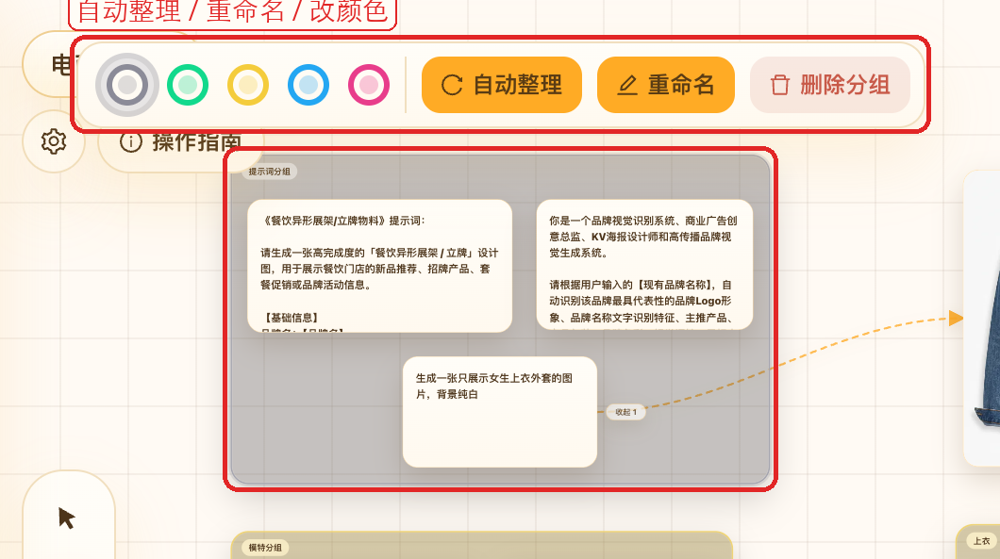
10. 搜索与一键整理
节点多了以后，不必靠肉眼满画布找。左侧工具栏提供搜索和一键整理。
- 点「搜索节点」，按任务 ID、提示词、模型或状态查找。
- 在结果里点一项，画布会聚焦到该节点，并缩放到 100%。
- 点「一键整理」前会二次确认。确认后，系统会按节点关系或类型重新横向排布并保存位置。
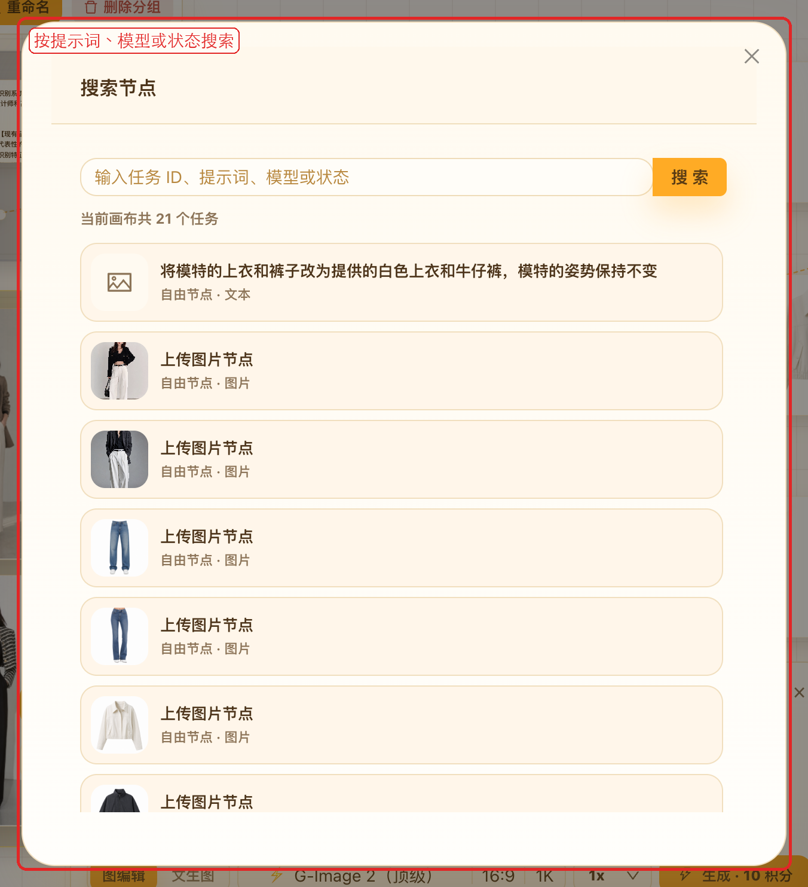
如果只想整理一部分：
- 框选若干节点后点「自动排列」，只重排当前选中项。
- 选中某个分组后点「自动整理」，只整理该分组内部。
11. 素材与反馈
常用图不用每次重新上传，使用问题也可以直接从画布提交。
- 我的素材：左侧工具栏或参考图菜单都可以打开。素材会长期保存，生图、视频和画布都能选用。
- 添加到我的素材：在节点上右键，把满意结果或上传图收入素材库。
- 反馈：右上角可以反馈画布本身的问题；节点操作条里的「反馈」则针对单次生成结果。
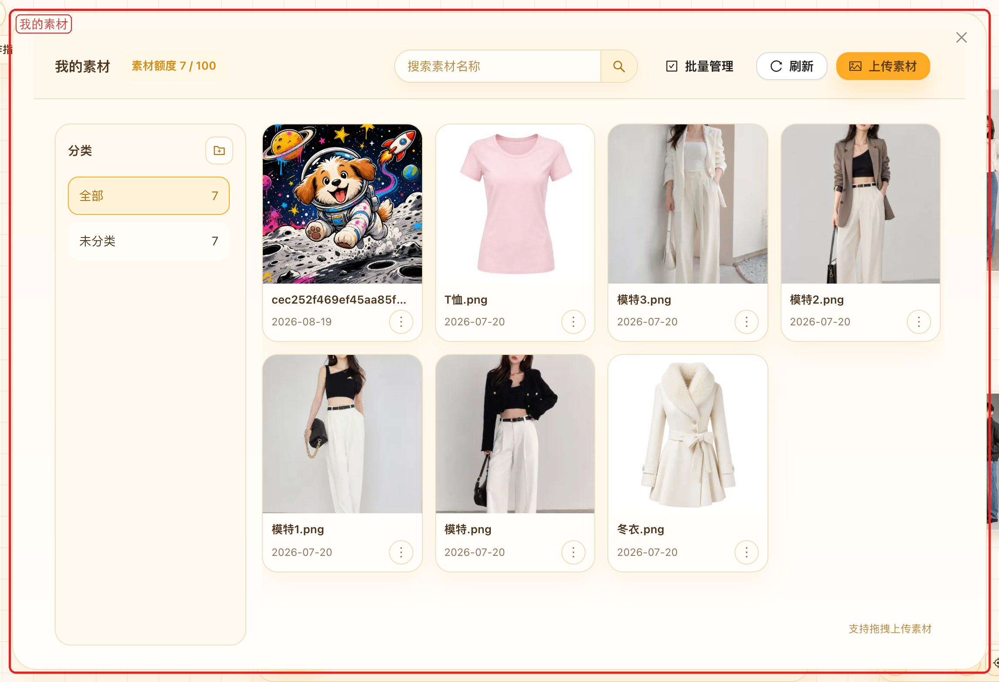
12. 使用建议
- 第一次用，可以先复制一块「示例画布」，对照节点关系再开始自己的项目。
- 单次快速出图用 AI 生图页；需要多轮对比、分支试错和长期整理时，再用无限画布。
- 先用文本节点写下目标，再生成，之后回看时更容易知道每张图为什么这样改。
- 整张风格要变，用图编辑；已经满意的静帧要做动态，直接在节点上点「生成视频」。
- 常用参考图放进「我的素材」，常用指令放进文本节点，避免每次重写。
- 原图有 15 天保存期限，定稿后及时下载。
- 积分不足时，按页面提示购买或兑换即可。左侧导航也能看到剩余积分。
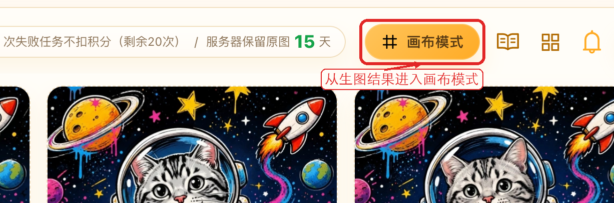